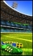

5-Reel 50-line Slots
The objective of Football Carnival is to obtain winning symbol combinations by spinning the reels.
To play the game:
- Line bets are chosen by clicking + and – below Line Bet to increase or decrease the amount.
- Total bet per game round = line bet X 50. This is due to the fact that the game Football Carnival is played using a fixed number of 50 active lines.
- Clicking Spin spins the reels with the currently selected line bet. During the reel spin the Spin button changes into Stop. Clicking Stop ends the spin animation and immediately displays the spin result.
- Reels can also be spun using the Auto Play function. Mouse over the Auto Play button to display the list of options. Select the number of spins to be played automatically or choose Until Feature to spin until the Free Games round is triggered. Clicking on an option starts the Auto Play function. The Auto Play button changes into Stop during the Auto Play mode. The Auto Play mode ends when the reels have been spun the number of times determined by the player, or when a Free Games round is triggered if you chose Until Feature, or when you click Stop.
- Clicking the Turbo Mode button switches on or off the Turbo Mode thus turning on or off some of the win animations and sounds, and making the reels spin faster or slower.
- Wins are calculated according to the paytable. Line win = line bet X corresponding multiplier according to the paytable. Scatter win = total bet X corresponding multiplier according to the paytable. The paytable can be accessed via the Info page.
- On a given payline, only the highest payline winning combination pays while simultaneous winnings on different paylines are accumulated.
- In case of a winning spin, the Win field displays the accumulating winnings. The Win ticker can be stopped by clicking anywhere on the screen to display the total win amount immediately.
- Payline wins and the total win are also displayed on the strip located at the bottom of the reels or the game window.
Info page:
- Clicking Info opens the reference screen describing different game components. Clicking the Prev and Next buttons in the lower right-hand corner of the screen enables navigating between the different info screens.
- The Paytable screen shows all winning combinations. When opened after a winning spin, the winning symbol combinations (number of symbols and bet multiplier) are highlighted and blink.
- The Football Free Games screen describes the symbol combinations necessary to trigger the Free Games feature and describes its rules.
- The Stacked Symbols screen explains what the stacked symbols are and outlines the rules for calculating their payouts.
- Clicking Show Paylines on the Paytable page, opens a screen that illustrates all possible payline combinations. Clicking Hide Paylines closes this screen and returns to the Paytable page.
- Clicking Back exits the Info screen and returns to the game.
Paylines:
- Paylines are represented by lines that appear over the reels as illustrated on the Paylines screen of the Info page.
- All 50 active paylines can register wins.
- There is a difference between the line bet and the total bet. The line bet shows how much is being bet on a single payline. The total bet shows how much is being bet in total on the game round. Payouts shown in the paytable are multiplied by the line bet.
The Scatter symbol is an exception to these rules. More information about the Scatter symbol can be found below.
About payouts:
- Payouts are listed on the Paytable screen. To find the possible win amount, the line bet must be multiplied by the payout.
- If two payline winning combinations occur on the same line, the higher of them is paid out. If more than one active payline has a winning combination, the winnings are accumulated.
- Winning combinations must start from the left most reel, and the symbols have to be consecutive.
The Scatter symbol is an exception to these rules. More information about the Scatter symbol can be found below.
Maximum Win Limit
The maximum win in the game has an upper limit. For more information, see the Terms and Conditions section.
Wild symbol
The Wild symbol can stand for any other symbol, except for the Scatter symbol, to make the best possible winning combination. There is also a separate payout for 2 or more Wild symbols on a payline, as seen in the Paytable. This is paid out instead of the regular symbol win if the win amount from Wild symbols is larger than the win from the regular symbols (by Wild standing in).
Scatter symbol
The Scatter symbols do not have to occur on any particular payline. If there are 2 or more Scatter symbols in any position in the spin results, the payout is multiplied by the total bet and added to the payline winnings, if any.
In addition, 3 or more Scatter symbols anywhere on the reels during main game trigger 10 Free Games.
More information about the Free Games can be found below.
Stacked symbols
, , , , and are stacked on all reels. They appear as one long image that occupies 2 reel positions but represent 2 separate and identical symbols. These symbols pay regularly and independently of one another.
Football Free Games
3 or more Scatter symbols in any reel position during the main game trigger 10 Free Games with an increasing win multiplier and a frozen Extra Wild symbol.
Free Games begin with a multiplier value of X2. This value increases by one after every second spin during Free Games (i.e. X2, X3, X4, etc.).
All wins received during Free Games will be multiplied by the respective multiplier value. This means that the first and second spin wins, if any, during Free Games are multiplied by X2, while the third and fourth spin wins, if any, are multiplied by X3, and so on.
The Extra Wild symbol appears only in the middle position of reel 3 during all Free Games and substitutes for all symbols except Scatter and will remain in that position for the duration of the Free Games.
To start the Free Games, click on Click to Start. A message will then appear explaining that 10 Free Games have been won with an increasing multiplier and an Extra Wild. Click on Continue and after a while the Free Games begin automatically.
During the Free Games, the reels are spun automatically using the same bet per line as on the spin that won the Free Games. After each spin, the win is displayed in the Win field. The Free Games Win field shows the accumulated winnings from the current Free Games. The Multiplier field shows the win multiplier value. The number of free spins remaining is shown above the reels.
If 3 or more Scatter symbols appear in any position on the reels during Free Games, only a payout is won but more Free Games are not retriggered. More Free Games cannot be won during the Free Games feature.
After all Free Games have been completed, a result board summarizes the winnings. Game Win shows the winnings that were received from the main game spin that won the Free Games. Feature Win shows the winnings that were received during the Free Games. Total Win shows the accumulated winnings (Game Win and Feature Win added up).
Clicking Continue will return you to the main game. When returning to the main game reels, clicking anywhere on the screen stops the win ticker and displays the full prize. Free Game wins are added to the payline wins.
Note: When re-entering Free Games, the multiplier is reset to X2.
Return to Player
The theoretical percentage return to player (RTP) is 91.32%.